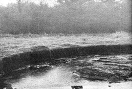

The peat bog shown here has been partially drained and is actually several feet deeper than it looks. A bed of this thickness can contain 1,000 tons of fuel per acre . . . equal to 500 tons of coal!